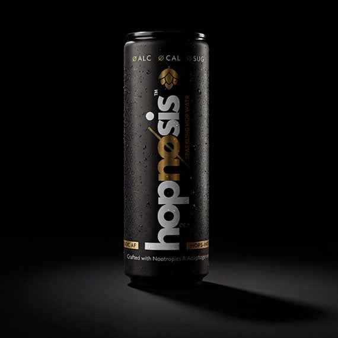
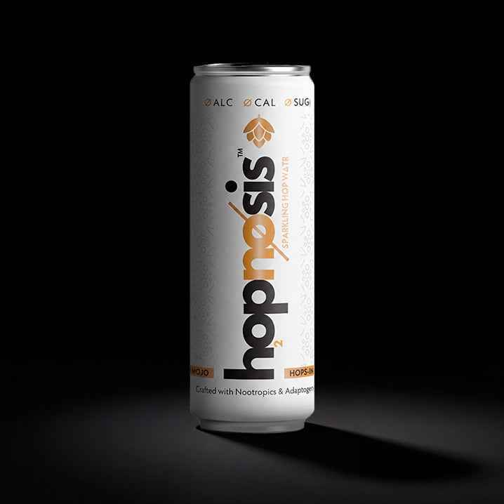
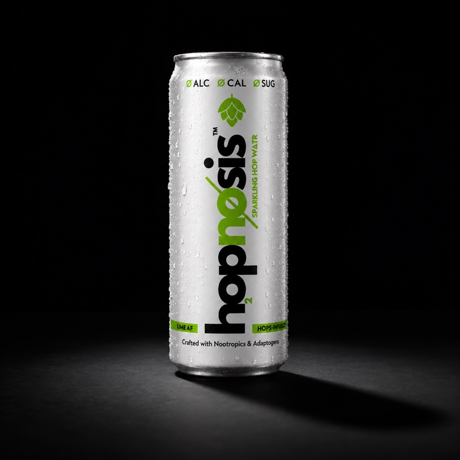

Three flavours. Three personalities. One questionable sense of self-awareness.
Scan.
Six questions.
One flavour.
No wrong answers. Some mildly concerning revelations.
quiz.hopnosis.co.za

Classic AFThe Smooth Operator
Mango AFThe Main Character
Lime AFThe Wild Card